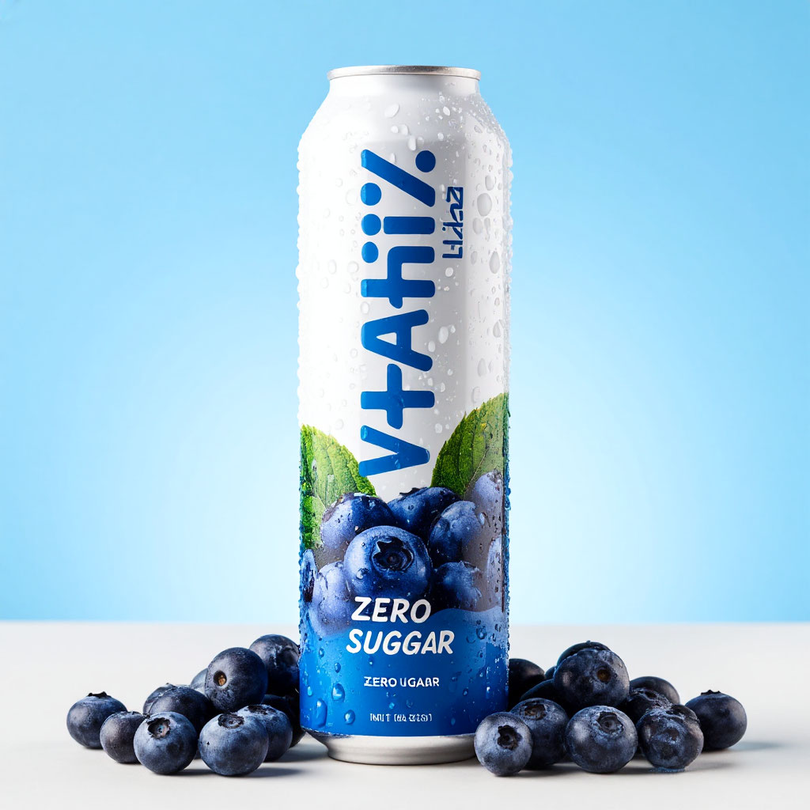
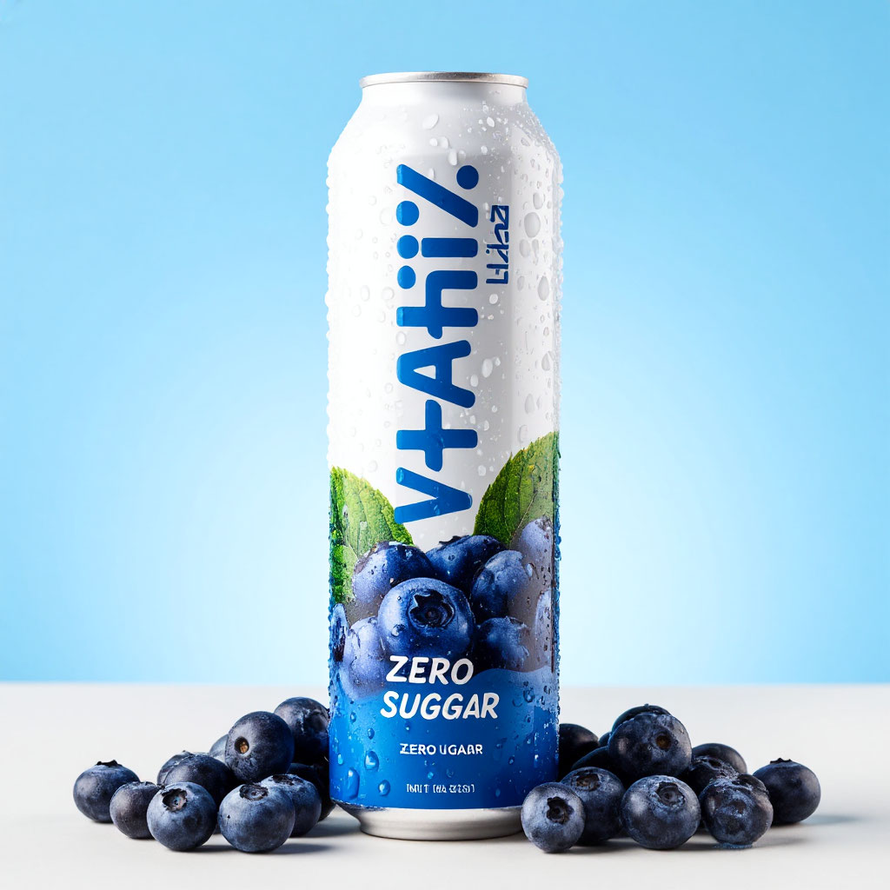

Витаминная газировка
Газированный напиток VitaFizz наполнит ваш организм витаминами и зарядит энергией.
В напитке содержатся витамины группы B, играющие ключевую роль в обмене веществ и поддержке функционирования нервной системы. Они помогают превращать углеводы, белки и жиры в энергию, улучшают настроение и снижают уровень стресса.
Наши напитки являются уникальными среди российских производителей благодаря своему полезному составу и отличному вкусу.
Популярные вкусы:
 
